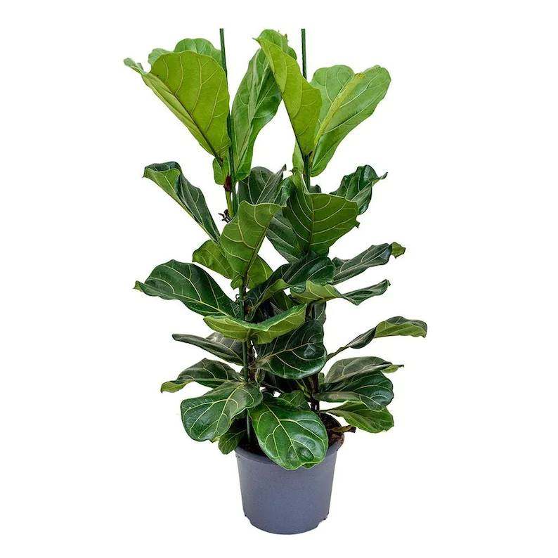
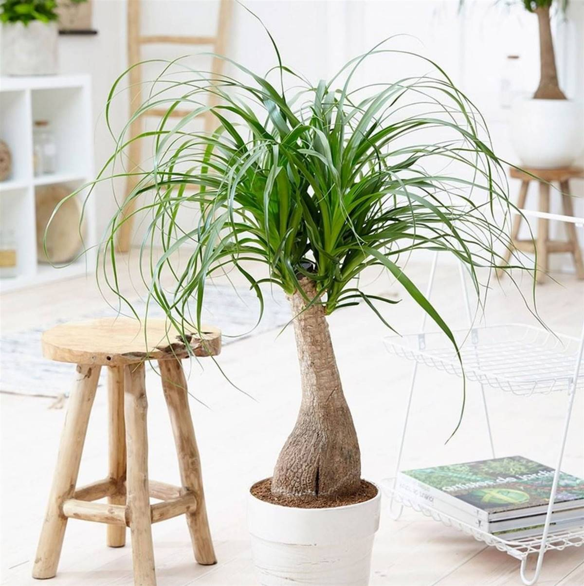
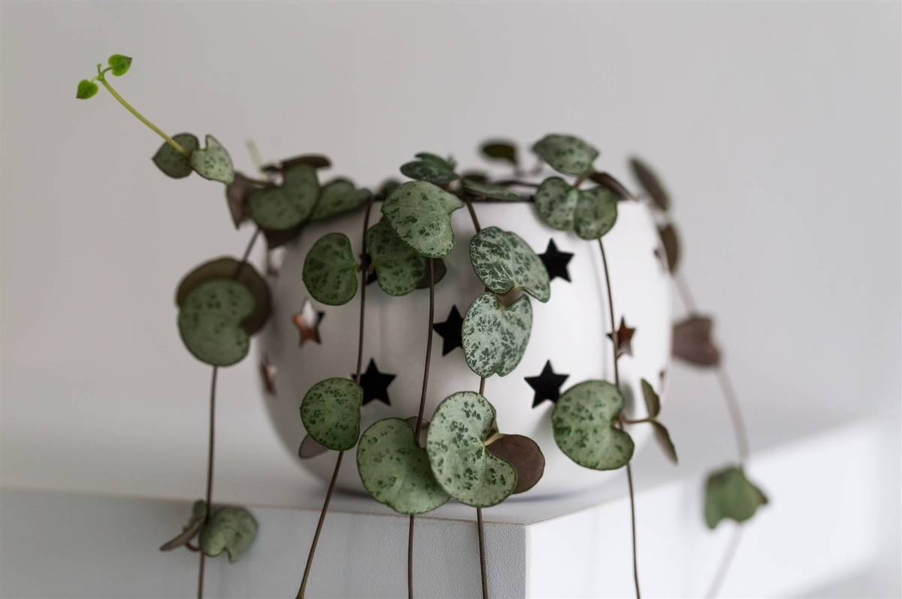
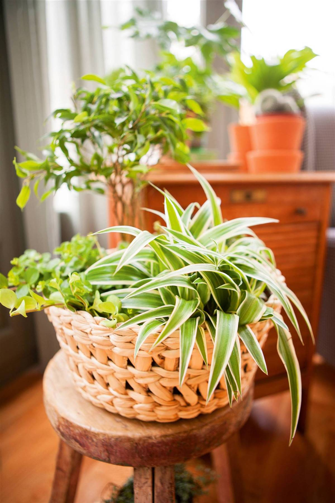

A continuacion te dejaremos 5 especie resistentes y faciles de mantener
1. Ficus, tropical y fresca
El ficus es una de las plantas de interior más populares gracias a su forma de arbolito. Además mejora la calidad del aire, y aporta ese toque verde perfecto.
Cuidados:
Sustrato: elige una tierra que se drene rápidamente.
Riego: puedes hacerlo una vez por semana en verano y cada 15 días en invierno, con cuidado de no encharcar las raíces, que podría provocar que se caigan las hojas o que las raíces se pudran. Para evitarlo, cuando la riegues, elimina los restos de agua que queden en el plato. Asimismo, ten en cuenta, que el ficus es sensible a la mayoría de productos químicos que se encuentran en el agua, como el cloro y el flúor: para que los productos químicos en el agua del grifo se disipen, deja reposar el agua de riego durante la noche. Así, los sedimentos quedarán al fondo del recipiente. Y, cuando riegues, evita echar los últimos centímetros de la botella.
Luz: esta planta de interior necesita grandes dosis de luz, pero sin que esta sea directa. Durante los meses más fríos es importante que reciban mucha luz, mientras que en verano puedes sacarlo al exterior, siempre y cuando lo coloques en un lugar con semisombra para que se quemen las hojas con el sol.
Temperatura: mantén tu ficus entre los 20 y 25 °C, evitando siempre los cambios bruscos de temperatura. Tampoco son recomendables ni las fuentes de calor ni las corrientes de aire.
Humedad: los ficus necesitan un ambiente cálido y húmedo, por lo que es recomendable pulverizar sus hojas con cierta frecuencia, especialmente en verano.
Un consejo: limpia las hojas del ficus de vez en cuando para que pueda seguir proporcionándote un ambiente más purificado y se beneficie mejor de la luz que recibe.

2. Planta de elefante, vistosa y con porte
Es una planta de interior muy alta. Puede llegar a medir un metro y medio en maceta, aunque en su hábitat natural puede alcanzar los 10 m. Se caracteriza por su grueso tronco, similar a una pata de elefante, de ahí su nombre. Es muy decorativa y sus cuidados son muy sencillos. Necesita grandes dosis de luz, pero no directa. Se recomienda un buen drenaje y comprobar la humedad de la tierra antes de regalarla.

3. Ceropegia woodii o collar de corazones
Esta suculenta colgante es llamativa por sus carnosas hojas en forma de corazón y flores tubulares. Colócala en un espacio luminoso, pero protegida de los rayos de sol directo. Antes de regarla, comprueba la humedad del sustrato. En invierno, necesitará como máximo un par de riegos al mes.

4. Cinta, duradera e ideal para principiantes
También conocida como malamadre o lazo de amor. Esta agradecida planta de porte colgante necesita luz, pero sin exponerla al sol directo. Su riego debe ser más moderado en invierno –una vez a la semana será suficiente–, mientras que en verano hay que incrementarlo y hacerlo 2 o 3 veces semanales. Es una de las plantas de interior más duraderas y perfecta para iniciarse en la jardinería. Además puede reproducirse fácilmente gracias a los hijuelos que salen en alguno de sus tallos. Estos son todos los cuidados que necesitan las cintas.

5. Poto, una planta de interior muy agradecida
Una casa sin un poto es impensable porque es agradecido, ágil y un superviviente. Como sus tallos caen y se arrastran, funciona bien en una cesta colgante o en una estantería alta para que pueda lucir su efecto cascada. Además, el poto también es conocido por su cualidad para purificar el aire y es muy longeva. ¿Quieres conocer todos los consejos para cuidar del poto como se merece?
Cuidados:
Deja que se seque la capa superficial del sustrato entre riego y riego.
Coloca la planta cerca de una ventana, pero nunca con sol directo. Mejor tamizarla con una cortina.
Según vayan creciendo los tallos, guíalos por la habitación.
Abona la planta cada mes en proceso de crecimiento y cada tres meses en periodo de descanso.
Abona la planta cada mes en proceso de crecimiento y cada tres meses en periodo de descanso.
La temperatura ideal del poto se encuentra entre los 16ºC y los 21ºC, las mínimas que soporta están entre los 3ºC y los 6ºC.